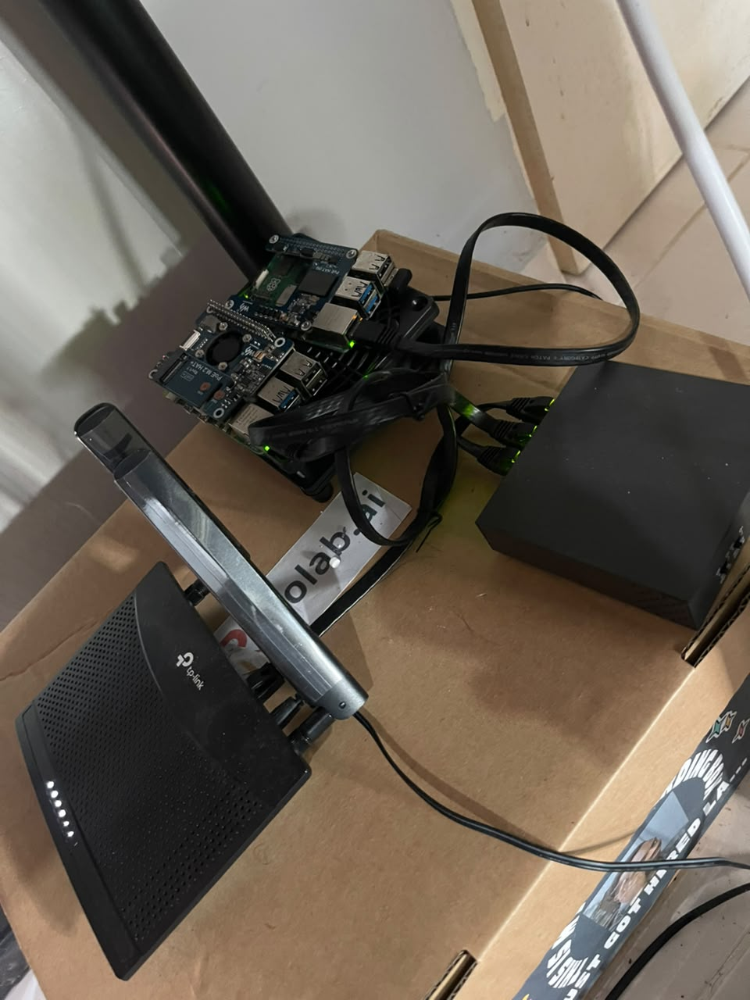
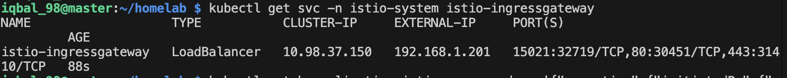

https://github.com/iqbalhakims/homelab-iqbal
When I see people build their own Kubernetes cluster, most of them are using Proxmox. In my case I just want to have a Kubernetes cluster to test things outside of production stuff. After a few days of research, I found two options: k3s and kubeadm. k3s is easier to bootstrap, and kubeadm is more manual — but I think I learn more using kubeadm. That's the whole point of building a homelab.
The Hardest Part
Choosing what to buy. From PoE, switch, router, old PC, or Raspberry Pi — this was a bit of a struggle. Here's what I ended up buying for this project:

- TP-Link router
- TP-Link PoE switch
- UGreen LAN cable
- 2× Raspberry Pi 5
- 2× PoE Waveshare hat
- Mini fan
I don't do this full time, but it took about 6 months just to figure out what to buy. Lol.
Limitations
- Slow internet connectivity
- Not high availability — single control plane and single worker node
- Power source could be cut anytime since it depends on home electricity
But hey, it's not production. The SLA isn't tightened to 99.99999% — and that's fine. It's still good enough to play around with.
SSH Setup
This really tested me. The Pi Imager has been updated, and the last time I used a Raspberry Pi was 2 years ago for my final year project.
The old way to enable SSH after flashing the SD card was to create an empty ssh file and a wpa_supplicant.conf with your WiFi config:
country=MY
ctrl_interface=DIR=/var/run/wpa_supplicant GROUP=netdev
update_config=1
network={
ssid="SSID"
psk="Password"
key_mgmt=WPA-PSK
}When I tried public key authentication, I kept getting Permission denied (publickey). I ran SSH with -v to get more info:
ssh username@<publicip> -vThis part alone took me 1–2 weeks. I read through the Raspberry Pi docs and Googled the error endlessly. Some people said it was a keyboard layout issue — the UK and US layouts are different, so the password characters were coming out wrong.
Then I searched "how to ssh raspi 5" on YouTube.
Boom — everything clicked: https://www.youtube.com/watch?v=FczQRXsgQ4o
The new Pi Imager lets you set hostname, username, password, and SSH public key directly in the UI before flashing. No need to manually create those files. And since I'm using a LAN cable for reliability, I didn't need to configure WiFi at all.
After successfully SSH-ing in, the first things I do:
sudo apt update
sudo apt upgrade -yThen I install Tailscale. SSH-ing into the Pi requires being on the same network, and sometimes I like working outside of home. I also use Termius on my phone to quickly check if temperature is spiking — though I should really set up an alert for that.
Setting Up kubeadm
Installing Required Kernel Modules and Disabling Swap
#!/bin/bash
apt-get install linux-modules-extra-raspi
sudo swapoff -a
sed -i '/ swap / s/^\(.*\)$/#\1/g' /etc/fstab
cat <<EOF | tee /etc/modules-load.d/k8s.conf
overlay
br_netfilter
EOF
modprobe overlay
modprobe br_netfilter
cat <<EOF | tee /etc/sysctl.d/k8s.conf
net.bridge.bridge-nf-call-iptables = 1
net.bridge.bridge-nf-call-ip6tables = 1
net.ipv4.ip_forward = 1
EOF
sysctl --systemInstalling Containerd
apt-get update -y
apt-get install ca-certificates curl gnupg lsb-release -y
mkdir -p /etc/apt/keyrings
curl -fsSL https://download.docker.com/linux/ubuntu/gpg \
| gpg --dearmor -o /etc/apt/keyrings/docker.gpg
echo \
"deb [arch=$(dpkg --print-architecture) signed-by=/etc/apt/keyrings/docker.gpg] \
https://download.docker.com/linux/ubuntu \
$(lsb_release -cs) stable" \
| tee /etc/apt/sources.list.d/docker.list > /dev/null
apt-get update -y
apt-get install containerd.io -y
containerd config default > /etc/containerd/config.toml
sed -i 's/SystemdCgroup = false/SystemdCgroup = true/g' \
/etc/containerd/config.toml
systemctl restart containerd
systemctl enable containerdInstalling Kubernetes Components
apt-get update
curl -fsSL https://pkgs.k8s.io/core:/stable:/v1.29/deb/Release.key \
| gpg --dearmor -o /etc/apt/keyrings/kubernetes-apt-keyring.gpg
echo 'deb [signed-by=/etc/apt/keyrings/kubernetes-apt-keyring.gpg] \
https://pkgs.k8s.io/core:/stable:/v1.29/deb/ /' \
| tee /etc/apt/sources.list.d/kubernetes.list
apt-get update
apt-get install -y kubelet kubeadm kubectl
apt-mark hold kubelet kubeadm kubectlInitializing the Cluster
I chose the Pod CIDR 10.90.0.0/16, which is also what Flannel uses.
kubeadm init --pod-network-cidr=10.90.0.0/16If everything goes well you'll see:
Your Kubernetes control-plane has initialized successfully!The output also gives you a kubeadm join command for your worker nodes — save that.
Configuring kubectl
mkdir -p $HOME/.kube
sudo cp -i /etc/kubernetes/admin.conf \
$HOME/.kube/config
sudo chown $(id -u):$(id -g) \
$HOME/.kube/configInstalling Flannel CNI
kubectl apply -f \
https://github.com/coreos/flannel/raw/master/Documentation/kube-flannel.ymlJoining Worker Nodes
SSH into each worker node and run the join command from the init output:
kubeadm join <control-plane-host>:<control-plane-port> \
--token <token> \
--discovery-token-ca-cert-hash sha256:<hash>Adding a Raspberry Pi Worker Node — Hurdles & Fixes
I later added a second Raspberry Pi (Debian trixie, ARM64) as a worker node to the existing kubeadm v1.31 cluster with Cilium as the CNI. Here are the four hurdles I ran into.
1. cgroup Not Enabled in containerd
Problem: kubelet failed to start because containerd wasn't using the systemd cgroup driver.
Symptom:
failed to run Kubelet: running with swap on is not supportedFix:
containerd config default | sudo tee /etc/containerd/config.toml
sudo sed -i 's/SystemdCgroup = false/SystemdCgroup = true/' /etc/containerd/config.toml
sudo systemctl restart containerd2. zram Swap Causing kubelet Crash Loop
Problem: Raspberry Pi OS automatically enables zram swap on boot. kubelet refuses to start if swap is on.
Symptom:
failed to run Kubelet: running with swap on is not supportedFix: Disable swap and mask the zram service so it doesn't come back after reboot:
sudo swapoff -a
sudo systemctl mask systemd-zram-setup@zram0
# Verify swap is off
cat /proc/swaps
# Should be empty3. Debian trixie sqv GPG Signature Rejection
Problem: Debian trixie ships with sqv as the default OpenPGP verifier. Since February 2026, sqv rejects PGP v3 signatures — which is what the Kubernetes apt repo uses.
Symptom:
Sub-process /usr/bin/sqv returned an error code (1)
Signature Packet v3 is not considered secure since 2026-02-01T00:00:00Z
Error: The repository 'https://pkgs.k8s.io/core:/stable:/v1.31/deb InRelease' is not signed.Fix: Rename sqv so apt falls back to gpgv:
sudo mv /usr/bin/sqv /usr/bin/sqv.bak
sudo apt update
sudo apt install -y kubelet kubeadm4. Missing cluster-info ConfigMap on Control Plane
Problem: The kubeadm join command kept timing out with context deadline exceeded even though the API server was reachable. The cluster-info ConfigMap in the kube-public namespace was missing, so the worker node couldn't validate the API server identity.
Symptom:
couldn't validate the identity of the API Server: failed to request
the cluster-info ConfigMap: client rate limiter Wait returned an error:
context deadline exceededFix: Re-run the bootstrap-token phase on the control plane:
sudo kubeadm init phase upload-config kubeadm
sudo kubeadm init phase bootstrap-token
# Verify
kubectl get configmap cluster-info -n kube-publicFinal Result
After fixing all four issues, the node joined successfully:
This node has joined the cluster:
* Certificate signing request was sent to apiserver and a response was received.
* The Kubelet was informed of the new secure connection details.
kubectl get nodes
# NAME STATUS ROLES AGE VERSION
# master Ready <none> 15h v1.31.14
# workernode1 Ready <none> 8h v1.31.14Summary
| # | Issue | Root Cause | Fix |
|---|---|---|---|
| 1 | containerd cgroup driver | Default config has SystemdCgroup = false |
sed to set SystemdCgroup = true |
| 2 | kubelet crash loop | zram swap auto-enabled on Raspberry Pi OS | swapoff + mask zram service |
| 3 | k8s apt repo not signed | Debian trixie sqv rejects PGP v3 | Rename sqv binary |
| 4 | join timeout | Missing cluster-info ConfigMap | Re-run kubeadm init phase bootstrap-token |
What's Next — Exposing Services on Bare Metal

On bare metal, when you create a Service of type LoadBalancer, it will stay stuck in <pending> forever. There's no cloud provider to hand out an IP. That's where MetalLB comes in.
I'll deploy MetalLB via Helm to give the cluster the ability to assign real IP addresses from my local network — so I can then link those IPs to actual domain names for my apps.
My domain is iqbalhakim.ink. The main web app lives at the root domain. For tools like ArgoCD and Litmus, I'll add subdomains:
iqbalhakim.ink— main web appargo.iqbalhakim.ink— ArgoCDlitmus.iqbalhakim.ink— Litmus chaos engineering
App Deployment Order
The sequence matters here — each layer depends on the one before it:
- ArgoCD — the GitOps pipeline, deploys everything else declaratively
- MetalLB — enables
LoadBalancertype services on bare metal - Istio — handles traffic routing and exposes services via the IP MetalLB assigns
- External DNS — watches for new services/ingresses and automatically creates DNS A records
- Cert Manager — handles SSL/TLS certificate provisioning and renewal automatically
- Grafana + Prometheus — cluster monitoring so I can actually see what's happening
I'll cover each of these in a follow-up post once they're all wired up.